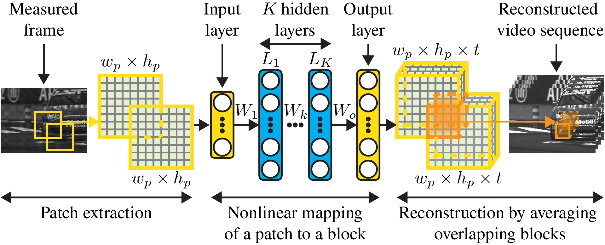

(* equal contributions) Video compressive sensing aims at increasing the temporal resolution of a sensor by incorporating additional hardware components to the camera architectuand employing powerful computational techniques for high speed video reconstruction. The additional components operate at higher frame rates than the camera’s native temporal resolution giving rise to low frame rate multiplexed measurements (frames in the middle) which can later be decoded to extract the unknown observed high speed video sequence (frames in the right).
In this work we present a deep learning framework for video compressive sensing. The proposed formulation enables recovery of video frames in a few seconds at significantly improved reconstruction quality compared to previous approaches. Our investigation starts by learning a linear mapping between video sequences and corresponding measured frames which turns out to provide promising results. We then extend the linear formulation to deep fully-connected networks and explore the performance gains using deeper architectures. Our analysis is always driven by the applicability of the proposed framework on existing compressive video architectures. Extensive simulations on several video sequences document the superiority of our approach both quantitatively and qualitatively. Finally, our analysis offers insights into understanding how dataset sizes and number of layers affect reconstruction performance while raising a few points for future investigation.
Architecture
We present the first deep learning architecture for temporal
video CS reconstruction approach, based on fully-connected
neural networks, which learns to map directly temporal CS
measurements to video frames. For such task to be practical, a
measurement mask with a repeated pattern is proposed.

Illustration of the proposed deep learning architecture for video compressive sensing